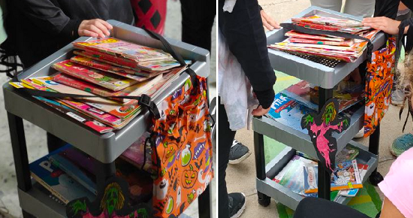

Como parte de la animación a la lectura, en nuestro centro se puede llevar a cabo la actividad "Blibliocarrito de Halloween".
Pero hará falta la colaboración del alumnado. ¿Nos animamos?

Blibliocarrito. Pilar Garrido (CC BY-SA )
Es una actividad normalmente vinculada al proyecto de biblioteca y plan lector, y es necesaria la participación del alumnado para echarlo a rodar.
Descripción de la actividad
Con ayuda del profesorado
- Seleccionaremos de la biblioteca del centro libros de todos los niveles relacionados, en este caso, con la temática de miedo: brujas, fantasmas, monstruos...
- Procuraremos que los libros sean de varios géneros: revistas, narrativas, poemarios, visuales... Por supuesto, depende también de los recursos que haya en nuestro centro.
- A ser posible, seleccionaremos libros tanto en castellano como en inglés.
Grupo de alumnos
- Montaremos un carrito con los libros seleccionados, adornándolo con motivos de halloween (ver imagen de ejemplo más arriba).
- Durante el recreo, usaremos el carrito pasándolo por el patio, o poniendo un "stand" de muestra.
- Mucho mejor si nos ataviamos con indumentaria Halloween.
- Animaremos al resto del alumnado a que ojeen los libros del carrito, los cojan para leerlo, compartan la lectura (lectura en grupo), etc.
- Llevaremos un registro de los libros prestados, la persona y el grupo al que pertenece.
¿Es necesario hacer rellenar una ficha de lectura?
Habitualmente, para esta actividad no se pide rellenar la ficha, aunque siempre se puede aprovechar para organizar un pequeño club de lectura donde los lectores/lectoras puedan intercambiar opiniones sobre los libros leídos.
Objetivos
Concretamente, los objetivos para esta actividad son:
- Fomentar el gusto por la lectura en el alumnado.
- Incentivar el uso de cualquier espacio lector.
- Dinamizar la lectura en grupo.
- Implicar a los alumnos/as en las actividades para tal fin.
- Perder los miedos a Halloween y a "pasar miedo" con la lectura cercana de sus protagonistas.
¡Vamos a ello, que seguro que resulta muy divertido, aprenderemos
y conoceremos más a los compañeros/as del centro!